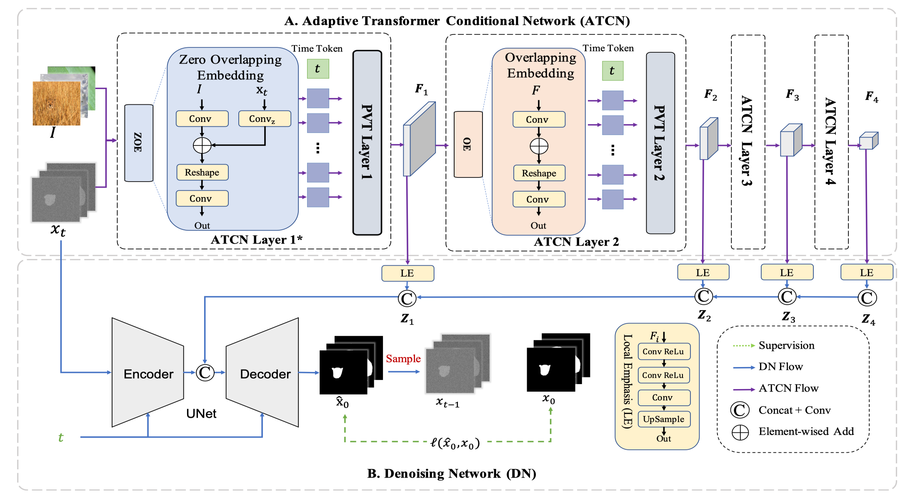
01
News
- Recognized as an ICML 2026 Silver Reviewer
- Two papers accepted by ICML 2026
- One paper accepted by ICCV 2025
- One paper accepted by CVPR 2025
- Awarded the China Association for Science and Technology Young Talent Support Project
- One paper accepted by TPAMI
- One paper accepted by NeurIPS 2024
- One paper accepted by ECCV 2024
- One paper accepted by ACM MM 2024
- One paper accepted by IJCV 2024
- One paper accepted by AAAI 2024
- One paper accepted by ICCV 2023
- One paper accepted by ECCV 2022
- One paper accepted by AAAI 2022
- One paper accepted by ICCVW 2021
- Second place in the Chalearn Face Presentation Attack Detection Challenge @ ICCV 2021
- One paper accepted by AAAI 2021
- Won the DFDC competition gold medal (9 / 2265 teams)
02
Publications
Journal
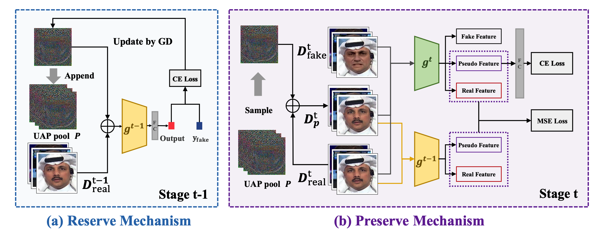
Continual Face Forgery Detection via Historical Distribution Preserving
Conference
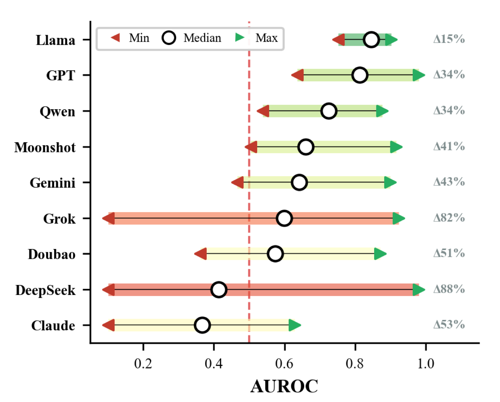
Minimizing Mismatch Risk: A Prototype-Based Routing Framework for Zero-shot LLM-generated Text Detection
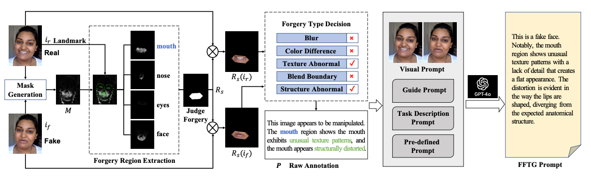
Towards General Visual-Linguistic Face Forgery Detection
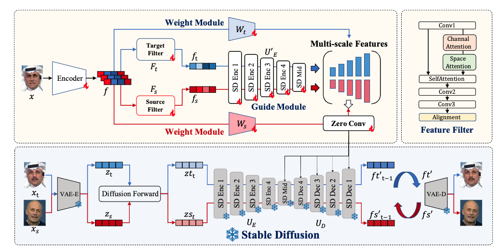
DiffusionFake: Enhancing Generalization in Deepfake Detection via Guided Stable Diffusion
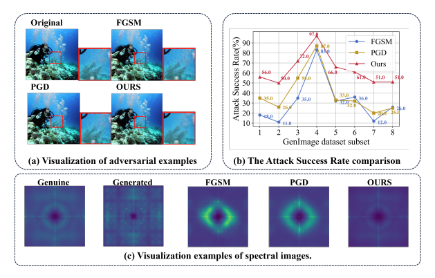
StealthDiffusion: Towards Evading Diffusion Forensic Detection through Diffusion Model
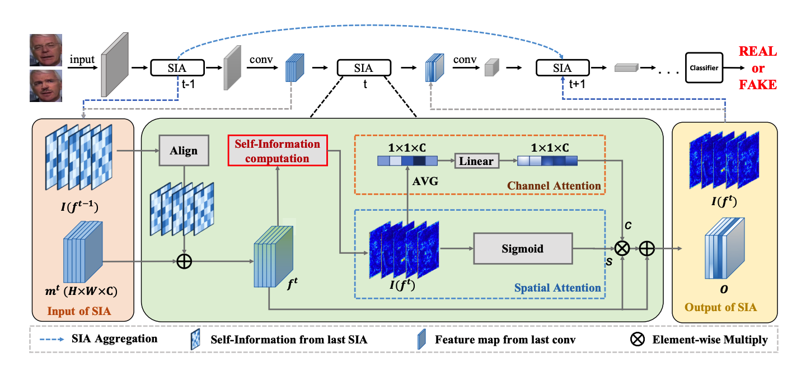
An Information Theoretic Approach for Attention-Driven Face Forgery Detection
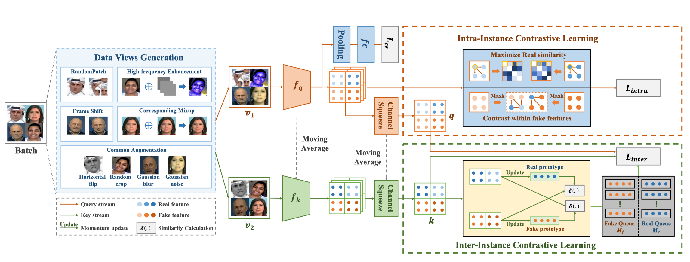
Dual Contrastive Learning for General Face Forgery Detection
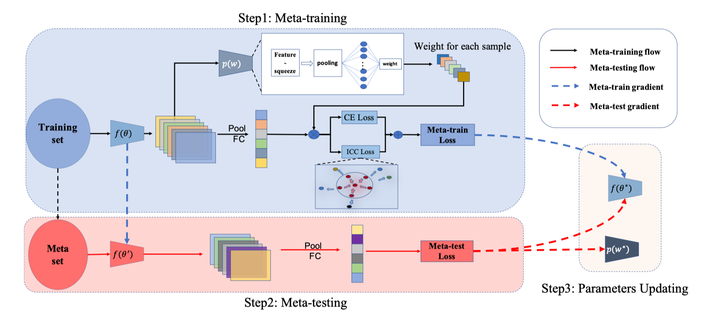
Domain General Face Forgery Detection by Learning to Weight
Preprints
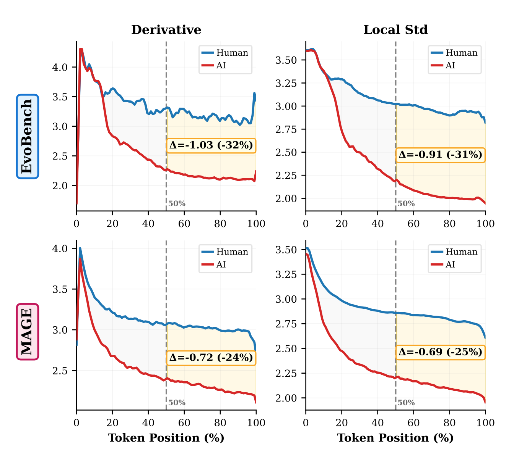
When AI Settles Down: Late-Stage Stability as a Signature of AI-Generated Text Detection
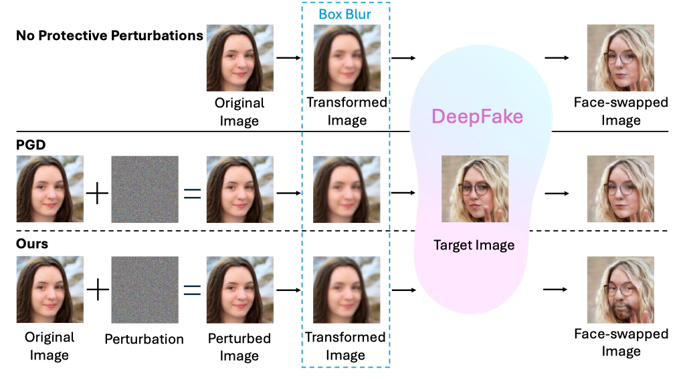
Towards Robust Protective Perturbation against DeepFake Face Swapping
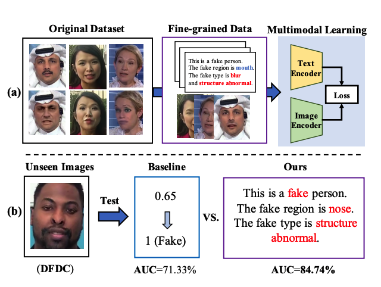
Towards General Visual-Linguistic Face Forgery Detection (V1)
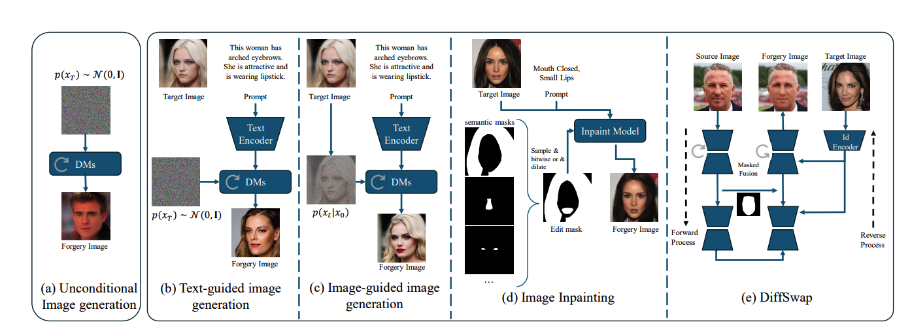
DiffusionFace: Towards a Comprehensive Dataset for Diffusion-Based Face Forgery Analysis
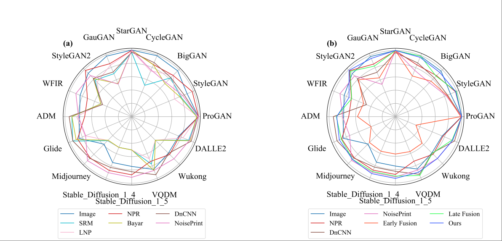
Exploring the Collaborative Advantage of Low-level Information on Generalizable AI-Generated Image Detection
Collaborations
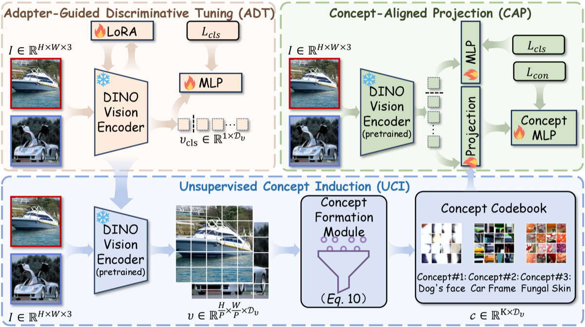
ForensicConcept: Transferable Forensic Concepts for AIGI Detection
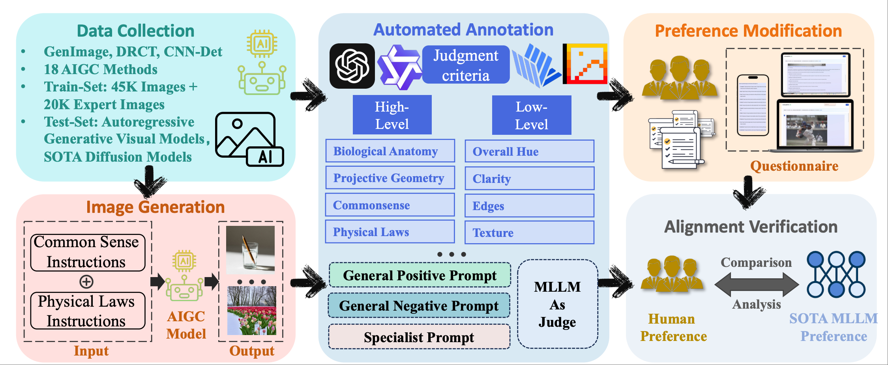
AIGI-Holmes: Towards Explainable and Generalizable AI-Generated Image Detection via Multimodal Large Language Models
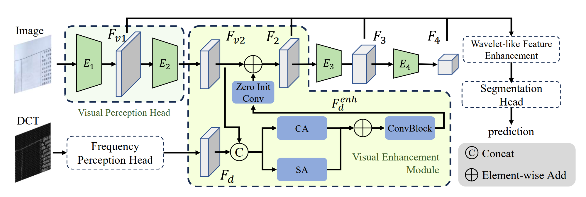
Enhancing Tampered Text Detection through Frequency Feature Fusion and Decomposition
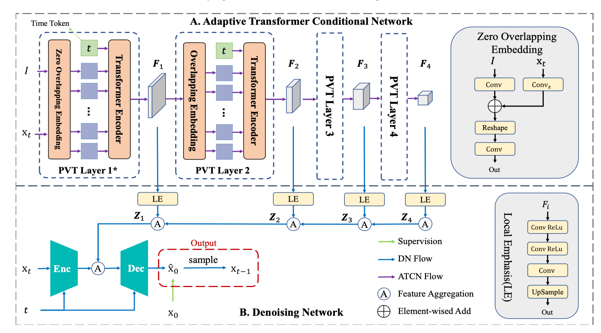
CamoDiffusion: Camouflaged Object Detection via Conditional Diffusion Models
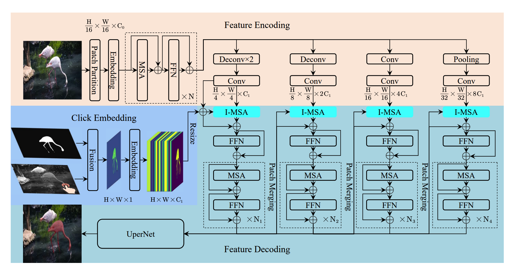
InterFormer: Real-time Interactive Image Segmentation
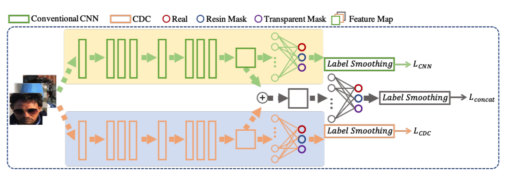
A Dual-Stream Framework for 3D Mask Face Presentation Attack Detection
03
Side Projects
Papers are hypotheses; products are proofs. Four things I designed, built and run myself, for real people — one of them was built for my grandmother.
01 · Research → Product
CheckAI
AI detection, fix as you go.
My detection research, productized. Full-modality AIGC detection for text, image and video, reporting word- and sentence-level forgery rates instead of one opaque score — then a built-in humanizer rewrites exactly the flagged spans to remove the “AI flavor” while keeping the meaning. Ships with a browser extension and a public API.
3,000+Users
200,000+Detections served
02 · For Grandma
SpeakKin
The family in a voice, always there.
My grandmother is nearly 90 and lives with severe Alzheimer’s. I fine-tuned a VoxCPM voice model on my own childhood voice, wired it to an agent that remembers her life story, and put it inside a XiaoZhi ESP32 speaker — so “little me” can chat with her in real time, endlessly and patiently. It is now a small public service: any family can clone a voice, write down an elder’s memories, and set up a companion of their own.
“That afternoon, Grandma said more than she had in the whole week before.” — my mom, after grandma’s first afternoon with it
20 sOf audio to clone a voice
90Years old — its first user
03 · Location Intelligence
GeoChat
From one question to a site-selection report.
A location-intelligence copilot with store-opening knowledge distilled into it. Ask in plain words — “should I open a coffee shop near Xiamen University?” — and it queries live AMap data for competitors, crowd flow and commutes, then writes a SWOT site-selection report in minutes. Paired with a companion app that counts real passers-by on site, so the numbers aren’t just estimates.
04 · WeChat Mini Program
Check-in Together
Habit streaks are better with friends.
A WeChat mini-program where a group commits to one shared task and checks in together — everyone sees everyone’s streak, so nobody wants to be the one who breaks it. Simple, social, and surprisingly sticky.
20,000+Users
04
Awards & Service
Honors & Awards
- DeepFake Detection Challenge (DFDC), Gold Medal (9 / 2265) — team “Detective Cauchy” page
- Chalearn Face Presentation Attack Detection Challenge @ ICCV 2021, 2nd place — team We Only Look Once page
- China Association for Science and Technology Young Talent Support Project
- Technology Construction Award, Tencent YouTu, 2022
- National Award, 2019
Academic Service
- ICML 2026 Silver Reviewer
- Conference reviewer: CVPR, ICCV, ECCV, NeurIPS, ICML, ICLR, AAAI, ACL, ICRA
- Journal reviewer: TPAMI, IJCV, TIFS, TIP, TCSVT, SPL, PR